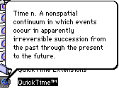
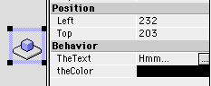
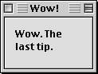
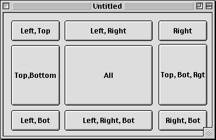

This is the last tips section that RBM will have, so I've decided to go out with a bang. Here are an unbelieveable 6 tips!
The bevel button control can obviously be used as a button. However, if you set its bevel property to something higher than 2, you can turn it into any type of appearance manager control! These include group boxes, Spin buttons, flippy triangles, and a whole lot more. Only a few are very useful, but here are all the possible values:
| 0-2 | Small, Medium, and Large bevelbuttons |
| 16 | A slider with a left facing thumb. |
| 20 | A slider with a right facing thumb. |
| 24 | A slider with a rectangular thumb. |
| 32 | A right facing flippy triangle. |
| 33 | A left facing flippy triangle. |
| 48 | A progressbar |
| 64 | A spin button |
| 80 | Spinning arrows |
| 96 | A placard |
| 112 | A seperator bar |
| 128 | A groupbox |
| 129 | A groupbox with a checkbox. Use the value property to check/uncheck it. |
| 217-8 | Time controls. |
 Nobody has ever accused balloon help of being overused, but many programs (particularly QuickTime) display some info when you move the mouse over their icon in the Finder. Adding this type of your help isn't as simple as adding regular balloon help in RB, but it's still not hard.
Just compile your program, and add an "hfdr" resource with an
ID of 18. Using a template such as Resorcerer's, you can make this resource contain
a string, point to a string elsewhere in the file, use styled text, or even contain
a picture!
 In 2.x, you can put just about anything in a window—even a class that has nothing to do with a control. Doing this makes it much easier for you to access the class's properties and methods. And, as an added bonus, if you click the "Visible" checkbox in the properties dialog, you can make the class's properties appear in the properties window! Now if only that worked for control subclasses…
In 2.x, every window sports a new method: DrawInto. This method takes three parameters: a graphics object, and an x and y coordinate. Using it, you can draw the content of the window into a graphics object.
A new feature in 2.1 is the QTGraphicsExporter class. Using this, you can easily save a picture object into a file using a variety of formats. And unlike the ExportPicture function, they don't require you to show a save dialog (though you can). To create a graphics exporter, use the GetQTGraphicsExporter function. It takes a four letter string which corresponds to the type code of the file that you want to save. For example, PICT is for PICT, JPEG is for JPEG, and so on. After this, you can use the rest of the class's methods to manipulate the image, and eventually save it:
 Plain document windows don't really look that great in OS 8. To spruce them up, many programs put a placard at the back of the window to give it a beveled look. This is easy enough to do in RB (see the screenshot), and it'll really improve the look of the window.
There is one problem though: it may not seem possible to select the window itself (after all, there isn't any space that doesn't have a control). Fear not though, simply click on a control, and then shift-click to deselect it. The window is now editable from the properties window.
Making a window resize correctly is a pain.You have to manually write code in the resize event to move and change the size of each control. Right? Nope! All controls have four properties that will help you: LockLeft, LockRight, LockTop, and LockBottom. How do they work? Pretty simple. This diagram should help. Left is LockLeft, Right is LockRight, and so on. Bot stands for Bottom and Rgt stands for right.

If we set the Lock properties as this window instructs us, all the buttons will resize on their own.
What do the values stand for? They LOCK the distance from the edge that you specify. For example, the bottom right button will always be the exact same distance from the bottom edge and the right edge if its LockRight and LockBottom properties are checked. What if LockTop and LockBottom are both checked? The control will resize, just like the controls that aren't on corners do in this window. This should save you a LOT of code, but if you stlill need to use the Resize event, remember that controls with Lock properties checked are resized before Resized is fired.